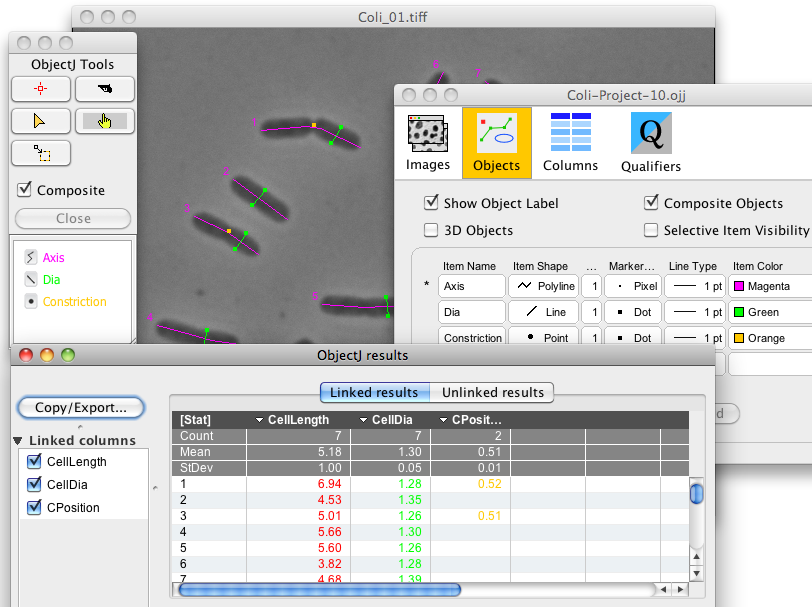
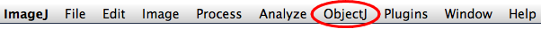
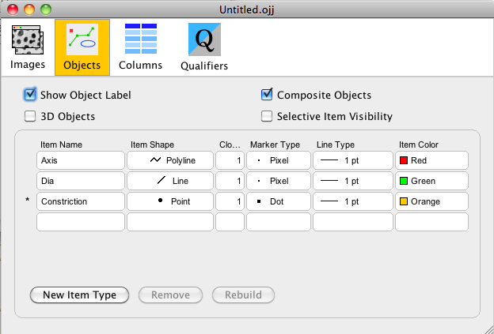

Tutorial
This tutorial shows how to set up a project for marking of cell length, cell diameter, and constriction site of bacterial filaments. Although these parameters can also be obtained automatically (see Examples), a fully manual approach is described here for conceptual reasons.

1. Install ObjectJ
Download the latest version of objectj_.jar (currently version 1.01g), put it into ImageJ's plugins folder, and restart ImageJ. Then choose menu Plugins>ObjectJ. Now you have an additional menu called ObjectJ.
2. Prepare a project folder in Finder/Explorer
This is a folder that should contain the images to be marked. We assume here that it is called "Coli-Folder", and that it contains the two sample images "Coli_01.tiff" and "Coli_02.tiff". (You can download these 2 files from here
3. Create a new project and link the images
- Choose menu ObjectJ>Project>New Project.. and save it as "Coli-Project.ojj" in the"Coli-Folder".
- Choose menu ObjectJ>Show Project Window and activate the "Images" panel. Drag image files into this panel in order to link them. "Linking images" means that the project remembers their names and lists them in the "Images" panel. Note that an image whose name does not appear in this panel cannot be marked.
4. Define objects
Our goal is to mark each cell with three different item types: i) cell axis with a segmented line (red), ii) cell diameter with a straight line (green), and iii) constriction (if there is one) with an orange point.

- Choose menu ObjectJ>Show Project Window and activate the "Objects" panel.
- Click three times "New Item Type" and edit all fields by double-clicking so the settings correspond to the figure shown below.
- "Clone" indicates how often this item may appear in an object; we set it to 1 as a cell has only 1 axis, 1 diameter and 0..1 constrictions. While placing markers, ObjectJ will advance to the next item type once the current item type has reached its maximum count.
- "3D Objects" is switched off in this case, it only should be switched on when an object's points are distributed across more than one slice, frame, or hyperstack channels.
- "Composite Objects" is switched on, as an object (a cell in this case) contains a composition of "Axis", "Dia" and "Constriction" markers.
5. Define columns
The ObjectJ Results window shows numerical properties of markers, and here you can define which properties you are interested in. In this demo, we want to define three result columns: one for the length of segmented line (polyline) "Axis", one for the length of line "Dia", and one for the relative position of the "Constriction" point (e.g. 0.5 if the constriction is in the center). You can modify, add or delete columns any time later.

- Choose menu ObjectJ>Show Project Window and activate the "Columns" panel.
- Click three times the button "New", and enter following settings:
Column Title Operation Operand Clone# Point# CellLength Length Axis 1 1 --- CellDia Length Dia 1 1 --- CPosition Rel.PartialPath Axis 1 1 Constriction 1 1 --- In plain English this means that you have created:
i) a column with title "CellLength", holding the lengths of the red "Axis" polylines.
ii) a second column with title "CellDia", which corresponds to the green "Dia" line in a cell.
iii) a third column with title "CPosition", that holds the relative position of the constriction spot. For this calculation we needed two operands: the first one is the "Axis" segmented line, the second one is the orange constriction point. This point is projected onto the axis in order to calculate relative longitudinal position, which is typically ~0.5.
"Clone#" is set to 1, as we always address the first item of its sort.
You can close and re-open the Project Window at any time without loosing information.6. Set markers
Now we can start with manual marking:
- Bring one of the linked images to the front, (double-click its name in the "Images" panel of the project window)
- Choose menu ObjectJ>Show ObjectJ Tools
- Select the marker tool (or click on "Axis")
- place markers in the image. Press the Tab key to advance to the next item type (e.g. from Axis to Dia) and continue to set markers. If you are not able to place any markers, check if your image is linked!
- An object is "open" when its label appears with asterisks (such as *13*) This means that you can append more points or items to it, or remove points with the backspace key.
- Regularly choose menu ObjectJ>Save Project; this saves your manual work in the .ojj file, but leaves the images untouched.
7. Modify markers
Choose menu ObjectJ>Show ObjectJ Tools and use the pistol or triangle tool to kill or move markers. Keeping the shift key down, only an item will be altered; keeping the alt key down, only a point is altered. With no key down, the entire object is affected. (see also tooltips when ObjectJ Tools window is in front) key, you
8. Show Results
Choose menu ObjectJ> Show ObjectJ Results to look at the linked results. Click on [Stat] column title to show statistics. Right-click on any column title to sort or show a histogram. Double-click on a result value to show the corresponding cell in the image.
9. Open an exisiting project
The simplest way to open a project is by dragging its icon into the ImageJ main window; alternatively, coose menu ObjectJ>Open Project.. You also can drag the .ojj file onto the ImageJ microscope icon; however, on Windows there is the danger that you open another instance of ImageJ, and having more than one ImageJ main windows open can be pretty confusing.